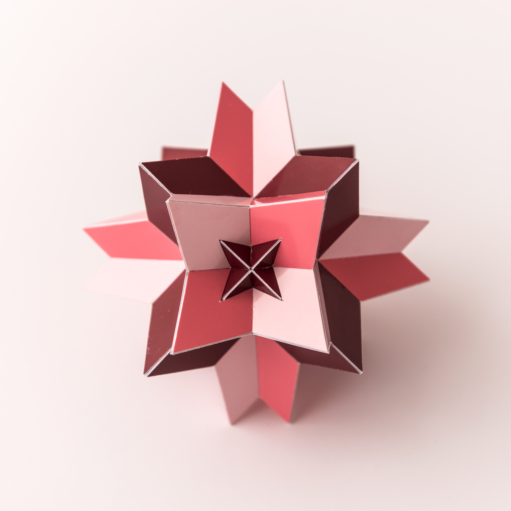

Compound of Six Tetrahedra

This is a well known compound of 6 tetrahedra that has the same symmetry as one cube. It consists of three Stella Octangulae, which are each given its own colour here, and in this sense it has a direct relation with the classical compound of three cubes. in which each cube is replaced by one Stella Octangula.
This model was built in 2018 and the edge length of one tetrahedron is 9.5 cm, which is around 3.7 inches.
Links
Last Updated
2026-01-23